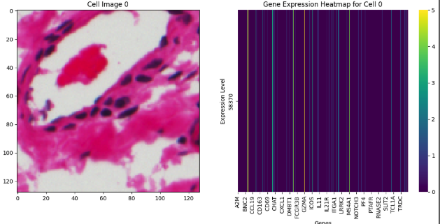

Projects
Crunch Lab
DEC 2024 - APR 2025
- Built AI models to: Predict gene expression from pathology images, input missing genes via contrastive learning, discover cancer-risk markers in IBD.
- As someone without a biology background, the learning curve was steep but rewarding! Though my final submission wasn't accepted, the experience was invaluable.
- Below is a sample image from the challenge:

Kaggle
MAY 2025 - JUL 2025
- Feature Engineering: Created rolling statistics (mean, std, min/max over 5-30 periods); added technical indicators (RSI, momentum); interactions (ratios, differences), and optimized memory with downcasting (np.int8, np.float32)
- Modeling: Trained an ensemble (VotingRegressor) of Ridge Regression (L2 regularization) and XGBoost (tree_method="hist"); validation via TimeSeriesSplit to prevent leakage; cross-validated correlation for scoring
- Pipeline Optimization: Processed lagged features in chunks (chunk_size=10) for memory efficiency; reconstructed test-set timestamps using precomputed offsets to align temporal dependencies
- Analysis: Results interpretation with feature importance plots (matplotlib) and prediction distributions; deployed batch prediction (batch_size=50k) to handle large-scale inference


A cat-themed SwiftUI task manager
MAY 2025
- SwiftUI Architecture: Used @StateObject for TaskViewModel persistence; implemented @EnvironmentObject for shared TaskManager state; applied @AppStorage for Dark Mode preference persistence
- Core Data Integration: Managed task objects with NSManagedObjectContext; implemented NSFetchedResultsController for effiecient updates
- Notification System:Custom UNUserNotificationCenterDelegate for foreground/background handling; deep linkage via notification payloads; notification rescheduling on app foreground
- Thread Management: Used DispatchQueue.main.asyncAfter for delayed initialization; implemented thread-safe notification handling
- UI/UX Features: Dynamic color scheme switching